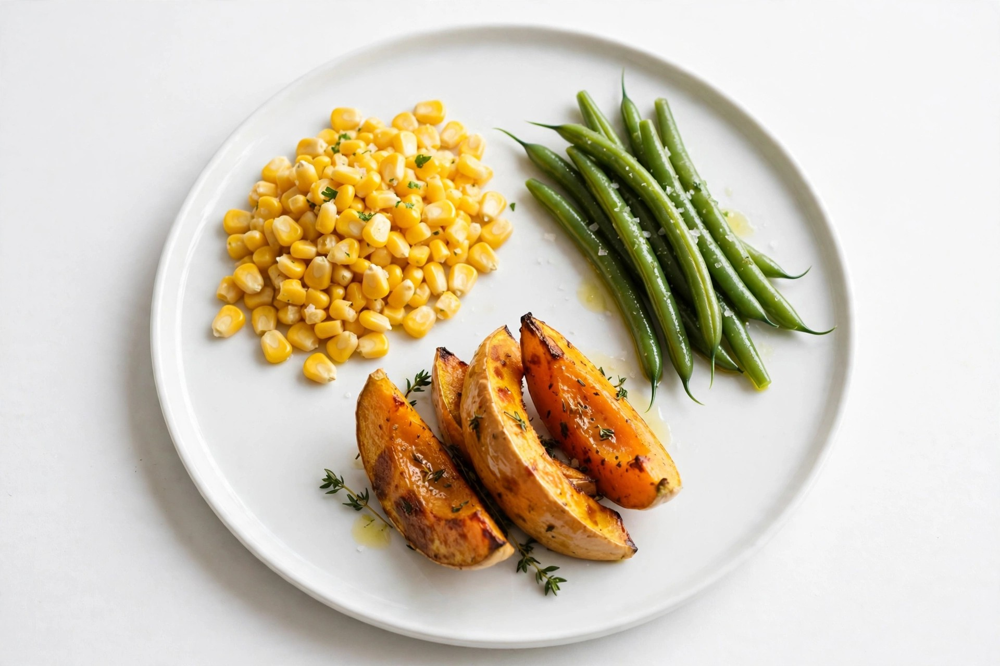
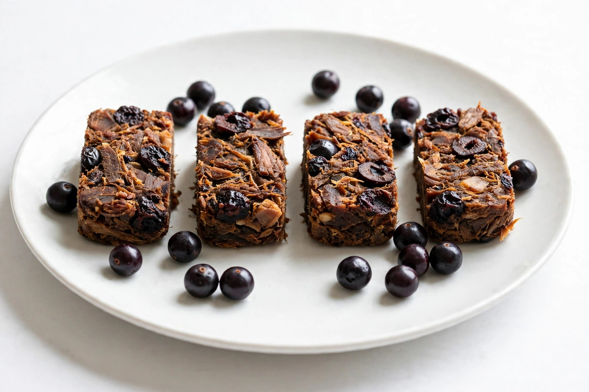
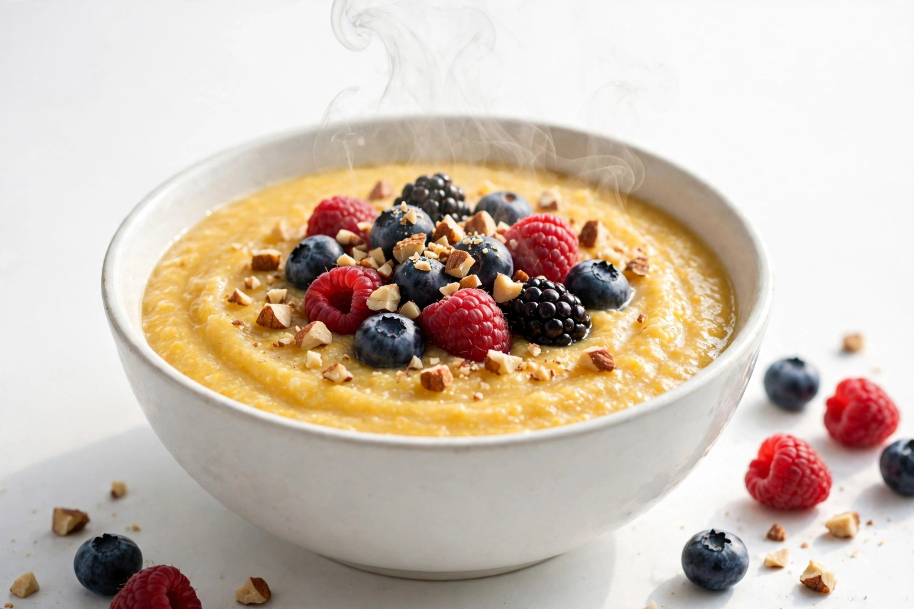

Trois Sœurs Multi-Agents
Sweet Corn · Runner Beans · Roast Squash
Corn, beans and squash, planted together for a thousand years because each gives the others what it lacks — a stalk to climb, nitrogen for the soil, shade against the weeds. The dish stands for the multi-agent system: no single crop carries the field, and the yield belongs to the arrangement, not to any one agent in it.
What the arrangement yields.

Wasna de Bordure
Dried Bison · Tallow · Chokecherry
Bison dried, pounded with tallow and chokecherries into wasna — the food the Plains peoples carried everywhere, because it kept for years and asked for nothing. It stands for the edge model: total capability, packed small enough to travel, running anywhere with no support at all.
Packed small, runs anywhere.

Nasaump Corpus
Cornmeal · Berries · Hickory Nuts
The Wampanoag nasaump — cornmeal simmered with berries and nuts into a porridge that carried a people through winter. It stands for the corpus: the great ground body of material, gathered kernel by kernel, on which everything else is trained.
Gathered kernel by kernel.